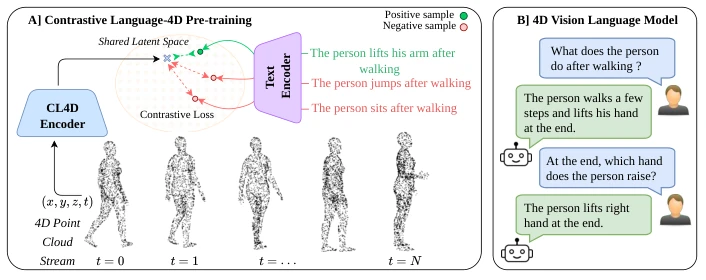
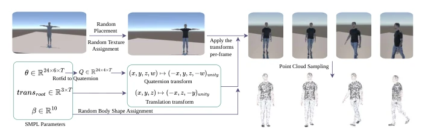
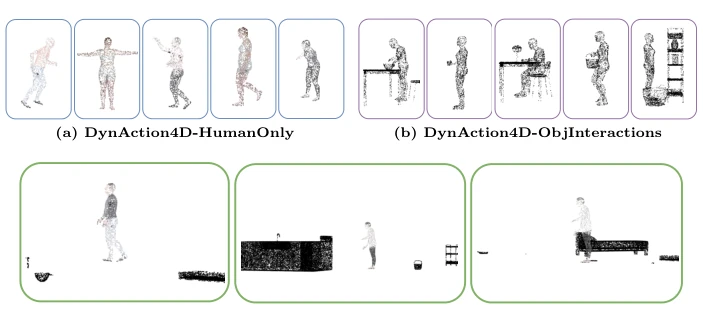
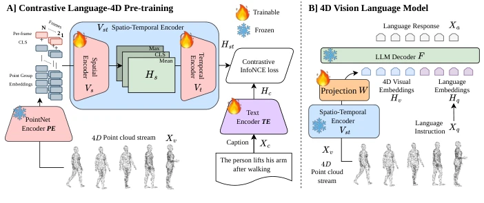
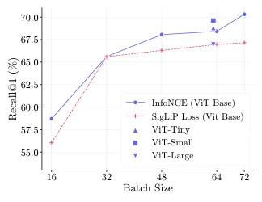
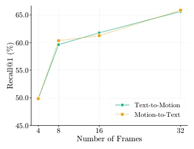
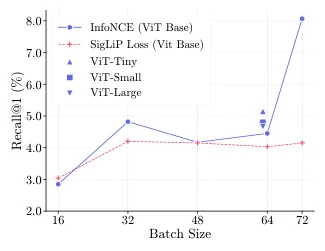
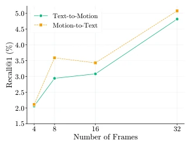
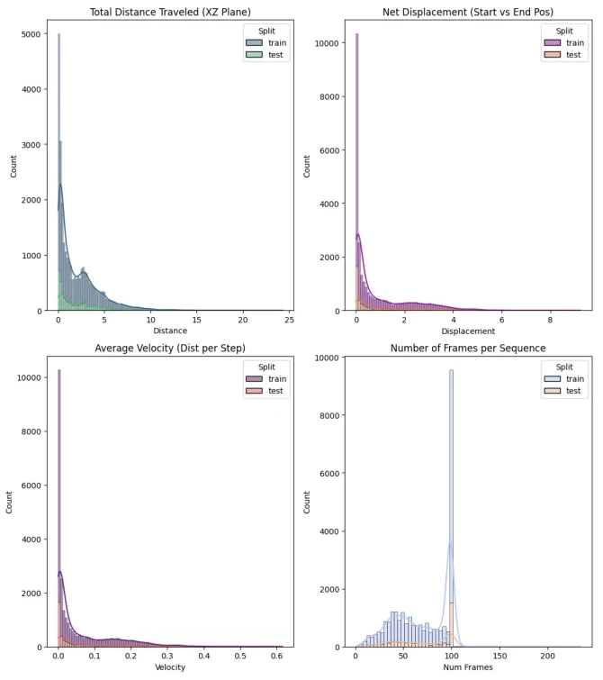
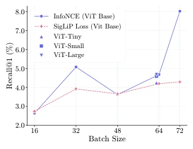

This paper finally liberates the "fourth dimension" from video pixels, directly handling dynamic point clouds. CL4D uses contrastive learning to align language and 4D geometry, while 4DVLM even skips RGB videos directly, performing VQA on point clouds. Although claiming to significantly outperform Gemini and GPT-5, one must see clearly it is on 4D point cloud tasks, after all video models have never seen this kind of input. The dataset DynAction4D is entirely generated by Unity, real-world generalization is questionable. However, pulling spatiotemporal geometry and language directly into one space indeed solves the pain points of existing methods either only looking at static 3D or only 2D videos. It counts as adding a piece to the "spatiotemporal understanding" of embodied intelligence, but there is still a sim-to-real gap before true robot deployment. Additionally, the model is sensitive to temporal dependencies, performance drops drastically when frame order is shuffled, indicating it truly learns "motion" rather than "static".
Embodied intelligence requires understanding the dynamic physical world, but existing Vision-Language Models (VLMs) are mostly based on static 2D images [36] or 2D video [5], lacking explicit 3D geometric reasoning capabilities. Although some work extends to 3D point clouds [27, 40], it is limited to static scenes and cannot model temporal dynamics. Existing 4D encoders are mostly based on classification tasks [18], unable to support open-vocabulary cross-modal retrieval. Therefore, the lack of a base encoder capable of directly processing dynamic 4D point clouds and aligning with language limits the reasoning capability of embodied intelligence in complex dynamic environments. Additionally, existing methods find it difficult to capture spatial structure and motion evolution simultaneously, leading to poor performance in dynamic scenes.
The framework is divided into two stages. Stage 1 CL4D contrastive pre-training: Input dynamic point cloud sequence, via PointNet Encoder (PE) groups point clouds per frame, generates local embeddings, then Spatiotemporal Transformer (Vst) extracts global geometry through Spatial Encoder (Vs), Temporal Encoder (Vt) captures frame dependencies. Text is encoded by DistilBERT, aligning visual and text features in shared latent space via InfoNCE loss, achieving zero-shot retrieval. Stage 2 4DVLM: Project pre-trained 4D visual embeddings linearly to LLaMA hidden layers, combine with LLaVA architecture for instruction tuning, support VQA. The innovation lies in directly processing (x,y,z,t) point cloud streams, rather than video frames or static point clouds, and utilizing ViT pre-trained weights to initialize the temporal encoder to enhance motion modeling. Additionally, the model adopts a Patching strategy to process spatiotemporal features, ensuring temporal dependencies are effectively captured, and achieves zero-shot retrieval capability through contrastive learning, generalizing without fixed action labels.

Fig. 1: Overview of the Language–4D framework: We introduce CL4D, a con- trastive pre-training paradigm that bridges the gap between 4D sequences and natural language. (A) Contrastive Language-4D Pre-training aligns 4D sequences with text in a shared latent space via a multi-modal contrastive loss. (B) 4D Vision-Language Model which uses the learned representations for VLM downstream reasoning tasks.

Fig. 2: Overview of the DynAction4D generation pipeline. SMPL parame- ters are first converted to Unity-compatible animations, then augmented using vari- ous methods such as random body shape assignment and random texture variations from [37]. The resulting meshes are then uniformly sampled in Unity to generate human action point cloud sequences. This pipeline yields highly diverse, temporally evolving point cloud sequences suitable for training complex dynamic scene understanding mod- els.

Fig. 3: Sample frames from point cloud sequences across the three dataset segments in DynAction4D. (a) HumanOnly: Five sequences, each depicting a distinct human body shape and action. (b) ObjInteractions: Five sequences, each featuring a human interacting with a different object. (c) Cluttered: Three sequences showing humans performing actions in cluttered environments.

Fig. 4: CL4D framework overview: (A) Contrastive Language-4D Pre- training (Sec. 3.1): A dynamic point cloud sequence (x, y, z, t) is encoded by the PointNet-based PE and a spatio-temporal encoder Vst(Vs, Vt) to obtain 4D visual em- beddings, which are aligned with text features from TE via a contrastive objective. (B) 4D Visual Question Answering (Sec. 3.2): The learned Vst representations are fused with language embeddings in a LLaVA setup to enable reasoning over dynamic point clouds and generate action-aware responses.
Tested on self-built DynAction4D dataset (containing HumanOnly, ObjInteractions, Cluttered, etc.) and RH20T. Retrieval task uses Recall@1, VQA uses BLEU, ROUGE, METEOR, BERTScore, etc. CL4D improves text-action retrieval by approximately 16.75% compared to Prior 4D encoder. 4DVLM surpasses Gemini 3.0 Flash and GPT-5 on VQA, even the latter uses RGB video input. Ablation experiments show that shuffling frame order leads to significant performance drop, proving the model effectively utilizes temporal information; freezing the text encoder also lowers performance. Additionally, the model shows certain robustness to partial point clouds and reconstruction errors. Increasing training batch size can improve performance, increasing frame count does as well.

Fig. 5: Training batch size vs. Batch- wise Recall@1 on text-to-motion re- trieval, with results referenced in Table 2. Eval. batch size = 32.

Fig. 6: Effect of num. frames for text- to-motion and motion-to-text retrieval evaluated using Batchwise Recall@1. Eval. Batch size = 32.

Fig. 9: Training batch size vs. Global Recall@1 on text-to-motion retrieval. Eval. batch size = 32.

Fig. 10: Effect of Num. of frames used in the point cloud sequences for Global Recall@1 text-motion retrieval tasks.

Fig. 11: Statistics of the DynAction4D-HumanOnly dataset segment.
其他图片Other Figures

Fig. 8: Training batch size vs. Global Recall@1 on motion-to-text retrieval. Eval. batch size = 32.